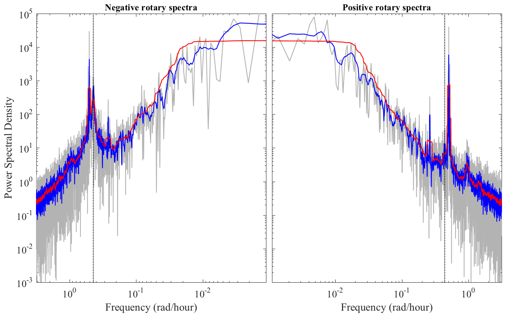

MSPEC Multitaper power and cross spectra. _______________________________________________________________________  _______________________________________________________________________ MSPEC implements spectral and cross-spectral analysis using the multitaper method for real or complex-valued data. MSPEC is to be run after calling SLEPTAP to compute the multitapers. _______________________________________________________________________ One-sided power spectrum [F,S]=MSPEC(X,PSI) returns the one-sided power spectrum of X at positive frequencies using data tapers PSI. Input: X -- M x N matrix containing N length M time series PSI -- M x K matrix of K data tapers Output: F -- [M/2] nonnegative *radian* frequencies S -- [M/2] x N one-sided power spectrum matrix In the above, [M/2] means: M/2 if M is even, and (M+1)/2 if M is odd. See FOURIER for the calculation of the Fourier frequencies. The spectra matrices are averages over the K "eigenspectra" computed with each of the K tapers, as discussed in Park et al. JGR 1987. The one-sided spectrum S is normalized such that its sum over all frequencies F, (1/2/pi)*SUM(S,1)*DF where DF is the frequency increment, approximates the signal variance; see discussion below. MSPEC(...,'detrend') detrends the data before computing the spectra. ______________________________________________________________________ Cross-spectra of real-valued data MSPEC can be used to compute the cross-spectrum of two real-valued time series or sets of time series. [F,SXX,SYY,SXY]=MSPEC(X,Y,PSI); --- For cross-spectra Input: X -- M x N matrix containing N length M time series Y -- M x N matrix containing N length M time series PSI -- M x K matrix of K data tapers Output: F -- M/2 nonnegative frequencies SXX -- [M/2] x N one-sided spectra of X SYY -- [M/2] x N one-sided spectra of Y SXY -- [M/2] x N one-sided cross spectra of X and Y See TWOSPECPLOT for plotting SXX and SYY simultaneously. ______________________________________________________________________ Rotary spectra of complex-valued data MSPEC can also the so called "rotary spectra" of complex-valued time series or sets of time series. [F,SPP,SNN,SPN]=MSPEC(Z,PSI); --- For rotary spectra of Z=X+iY Input: Z -- M x N matrix containing N length M time series PSI -- M x K matrix of K data tapers Output: F -- M/2 nonnegative frequencies SPP -- [M/2] x N positively rotating power spectrum matrix SNN -- [M/2] x N negatively rotating power spectrum matrix SPN -- [M/2] x N rotary cross spectral matrix Note that the rotary spectra are defined such that SXX+SYY=SPP+SNN. The rotary spectra SPP and SNN are normalized such that the sum of SPP over all frequencies plus that of SNN approximates the variance of Z. See TWOSPECPLOT for plotting SPP and SNN simultaneously. ______________________________________________________________________ Sample rate [F,S]=MSPEC(DT,...) specifies the sample interval to be used in the calculation of the frequency array F. DT defaults to unity. Spectral values depend linearly upon the sample rate in order that the integral of the spectra over frequency approximate the variance. ______________________________________________________________________ Periodogram MPSEC can be used to form the naive spectral estimator, known as the periodogram. Although this is not generally a good way to estimate the spectrum, it can be useful as a comparision. MSPEC(X,[]) or MSPEC(X,Y,[]) with PSI empty uses the default, or boxcar taper, normalized to unit energy. This returns the periodogram. ______________________________________________________________________ Normalizations By default, MSPEC uses *radian* frequency as in cos(f t). Optionally MSPEC(,...,'cyclic') will use *cyclic* frequency, as in cos(2 pi f t). MSPEC is normalized to approximately recover the time series variance. For the MSPEC periodogram, this recovery is exact, although the expressions are complicated somewhat by the use of one-sided spectra. Real-valued data [F,S]=MSPEC(DT,X,[]) where X is a real-valued time series of length M recovers the variance of X, STD(X,1).^2, as follows: (1/2/pi)*(F(2)-F(1))*SUM(S(2:end)) -- M odd (1/2/pi)*(F(2)-F(1))*(SUM(S(2:end-1))+S(end)/2) -- M even Note that the zero frequency is omitted in the summation, and for even time series length, the power at the Nyquist S(end) must be divided by two to avoid double-counting by the one-sided spectrum. The "1" in the argument of STD forces STD to use an N rather than N-1 normalization. Complex-valued data [F,SPP,SNN]=MSPEC(DT,Z,[]) where Z is a complex-valued time series of length M recovers the variance of Z, STD(Z,1).^2, as follows: (1/2/pi)*(F(2)-F(1))*(SUM(SPP(2:end))+SUM(SNN(2:end))) -- M odd (1/2/pi)*(F(2)-F(1))*(SUM(SPP(2:end))+SUM(SNN(2:end-1))) -- M even Again the modification for even M prevents the power at the Nyquist from being double-counted. This modification is necessary because the negative rotary spectrum duplicates the Nyquist when M is even. ______________________________________________________________________ Cross-spectra of complex-valued data To compute the cross-spectra of two complex-valued time series or sets of time series Z1 and Z2, run MSPEC repeatedly. [F,SP1P1,SP2P2,SP1P2]=MSPEC(Z1,Z2,PSI); [F,SN1N1,SN2N2,SN1N2]=MSPEC(CONJ(Z1),CONJ(Z2),PSI); The first call returns the spectra and cross-spectra of Z1 and Z2 at positive frequencies, while the second returns their spectra and cross- spectra at negative frequencies. Finally [F,SP1P1,SN2N2,SP1N2]=MSPEC(Z1,CONJ(Z2),PSI); returns the cross-spectra between the positive rotary components of Z1 and the negative components of Z2. ______________________________________________________________________ Adaptive spectra MSPEC(...,LAMBDA,'adaptive'), where LAMBDA contains the eigenvalues of the tapers as computed by SLEPTAP, alternately uses the "adaptive" multitaper method of Thomson (1982). This implementation follows that of Park et al. (1987a), JGR. For cross-spectra or for rotary spectra, the weights appearing in the adaptive spectra are derived for the total spectrum of each signal compoment, that is for SXX+SYY or SPP+SNN as appropriate. Then the separate spectra and co-spectra are computed using identical weights. ______________________________________________________________________ Cell array input / output MSPEC generates cell array output given cell array input. Let's say one has P different time series, X1, X2,..., XP. Put these into a cell array X{1}=X1, X{2}=X2, ..., X{P}=XP, and then use '[psi,lambda]=sleptap(cellength(x))' to make a cell array of tapers. [F,S]=MSPEC(X,PSI) then returns cell arrays F and S corresponding to the Fourier frequencies and spectra of the P arrays. The other argument forms given above also work. In particular, specifiying the sample time through MPSEC(DT,...) works, with DT either a scalar or an array of the same length as the cell array X. The spectra can then be plotted with CELLPLOT(F,S), or TWOSPECPLOT for a pair of output spectra. ______________________________________________________________________ Parallelization MSPEC(..., 'parallel') when the input fields X, X and Y, or Z are cell arrays, parellelizes the spectral estimation by looping over the cells with a PARFOR loop. This requires Matlab's Parallel Computing Toolbox. ______________________________________________________________________ Example The example at the top of this help file shows clockwise (left) and counterclockwise (right) rotary spectra from moored current meter measurements of the ocean currents in the Labrador Sea. The periodogram is in gray, and blue and red are multitaper spectra with P=4 and P=32, respectively. The local Coriolis frequency is marked with a dashed line. Tidal and inertial peaks are apparent. The main point of this figure is to show that increasing P increases the degree of frequency-domain smoothing. ______________________________________________________________________ 'mspec --t' runs some tests. 'mspec --f' generates the above sample figure from Bravo mooring data. See also: SLEPTAP, HERMFUN, MTRANS, MSVD, TWOSPECPLOT. Usage [f,s]=mspec(x,psi); [f,s]=mspec(dt,x,psi); [f,spp,snn,spn]=mspec(z,psi); [f,sxx,syy,sxy]=mspec(x,y,psi); _________________________________________________________________ This is part of JLAB --- type 'help jlab' for more information (C) 2000--2015 J.M. Lilly --- type 'help jlab_license' for details